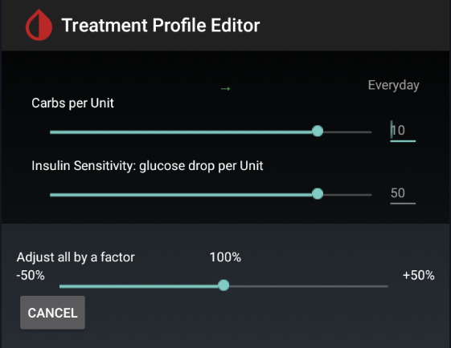

Predictive Simulation


xDrip+ Predictive Simulation settings is an experimental, non medically approved feature. Make sure to re-read the EULA before enabling it. Do not use them to take medical decisions.
Warning
If you use a closed-loop system do not rely on these predictions since they don't take into account basal modulation.
Enabling predictions will add the light purple prediction curve on the main graph. This curve is showing you how your BG should theoretically evolve using current insulin and carbs entered in xDrip+. More details on display here.

xDrip+ can handle multiple insulin types. See below.
Carb ratio and insulin sensitivity⌁
Automatic import
If you use accepting treatments from AAPS or NSClient, these parameters and the basal profile will automatically import at profile switch.
Carb absorbtion rate⌁
These parameters are key to diabetes management and should be known.
They will most probably vary during the day and should be calculated for every meal and also outside meal times.
Everybody has his own parameters. Don't use other people's parameters.
Touching one of the two menus above will open the treatment profile editor.

You can define carbs per units of insulin and correction factor, just remember to validate the entry and not jump from one line to another without confirming an entry. Save when finished.

You will create blocks of for different hours during the day.
To create (split) or delete a block, long touch the upper area of the block.

Touching the time bar at the top of a block allows you to change it, it also will propagate to the block below.
Eventually you'll end up having something like this.
If necessary you can perform a global percentage modification of all parameters with the slide at the bottom.
Remember to save.

Basal Profile Editor⌁
This feature is under development.
Current basal profile is automatically imported from NSClient when Accept Treatments is enabled.
You can display and edit your basal profile.
- Select the profile you want to modify or view
- Export (not functional yet)
- Save locally
To edit your basal profile:
- Touch the basal hour bar you want to modify, it will turn orange
- Change the step if necessary
- Use the positive numbered box or the upwards arrow to increase
- Use the negative numbered box or the downwards arrow to decrease
- Use set, or double tap the bar to set the new value
Use trend momentum⌁
Trend momentum is independent from predictions, it is just a mathematical extrapolation (i.e. if BG continues to evolve with his trend, not considering insulin and carbs, where will it go?) of your current BG trend (up/down/flat). It can be used for Forecasted Low alarms.
Trend momentum can be integrated in predictions (recommended).
Including current trend (1) can prevent sharp prediction variations and might be closer to real evolution (2).
Might

EULA⌁
Review the EULA before using this feature.
Low Level prediction⌁
You can setup more prediction parameters here.
Target is used for bolus wizard calculator. This is the desired BG target.
Insulin duration depends on your insuline type. Changing the value requires xDrip+ restart (or phone restart).
Liver parameters were introduced to take into account liver glycogen reaction to lows but are not characterizable easily and should be left at default values.
Multiple insulin types⌁
Select the insulin types you are using.
You can select up to three insulin types and then decide which one is used basal and which for bolus.
When adding multiple insulin type, using treatments will ask you to select the one you're using for this treatment.
You can add basal insulin on the display and integrate it in calculation.
Not recommended as basal insulin in MDI is only used to keep background BG constant.
Use notes to track basal injections.
Multiple insulin types will be displayed in an identical way on the main graph.